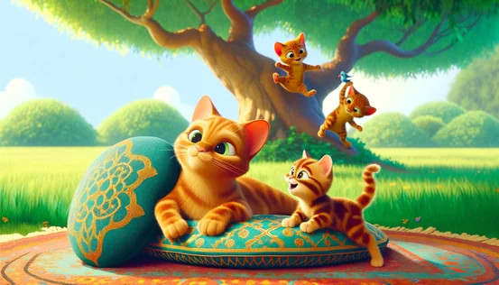

Prompt engineering and critical thinking
Precise description of a given image
The exercise
To develop students’ lexical and grammatical accuracy by having them write detailed prompts in English to reproduce an image with a GenAI tool. By analysing their results and interacting on a forum, students also strengthen their critical skills in writing.
What the student does:
- Look closely at the image.
- Use a chatbot to reproduce the image, focusing on the details and writing prompts that are as precise as possible.
- Post the resulting image on the forum with a comment on the result and the difficulties encountered, and interact with the other participants’ work.
Example of an image with a comment

Their comment on the forum
"The generated image is almost similar to the original; however, it is difficult to reproduce the same cushion patterns as those in the reference image. In my image, the blue bird is also missing, as well as the moss at the base of the tree, the bushes in the background, and the rug under the cushions. The cats are also slightly different from the original; they do not have the same position. The tree is different as well, and there are additional trees and flowers that do not appear in the original model."